النماذج مقابل القوالب الفعلية
للمراجعة يا أحمد. كل شريط يعرض النموذج الذي رسمته سكربتات بايثون بجانب المتجر الفعلي على موبايل 390 بالعربي، عند موضعي تمرير. المتجر الفعلي هنا هو الإنتاج قبل التعديلات (٢٥ أكتوبر ٢٠٢٦). بعد نشر السلسلة نعيد التصوير بنفس السكربت (apps/marketing/scripts/looks/snapshot.mjs على فرع feat/looks-real-snapshot) فيظهر الأثر. لا يتغير أي هاتف في الصفحة الرئيسية قبل موافقتك.
Plan: docs/plans/2026-10-25-templates-match-mockups.md. Stack: store lockup (#235), hero ratio, slim tab bar + photo notice in the footer, type hierarchy, bare home cards, phone section padding, mock hero photos + clinic hero band, palette.
قرارات تحتاج موافقتك
- الألوان (حكم PAL-2، بموافقتك): نحاسي عميق لدهب ورن، ومرجاني فاتح خارج النطاق البرتقالي لورشة دهب، والنعناع والطيني والعنبري كما هي لأنها بالفعل أقرب درجة متوافقة؛ أخضر لمّة العشبي من النموذج. علبة الهدايا تبقى بالوردي البني لأن النحاسي العميق أقل من AA على أرضيتها الوردية. اعتراض أو تغيير؟
- تبديل صور الهاتف في الصفحة الرئيسية للموقع إلى المتاجر الفعلية: لم يُنفَّذ، ينتظر موافقتك بعد رؤية الصور بعد النشر.
- الصور: صور البطل (الهيرو) هي نفس صور النماذج وصارت مرفوعة في R2 تحت demo/<template>/mock/ دون استبدال القديمة؛ إعادة بذر المعارض الخمسة تتم بعد دمج السلسلة ونشرها.
قمر · أتيليه (Qamar · Atelier)
Changes in the stack: portrait hero 3/4, bare cards, 20 px sections, slim tab bar, lockup.
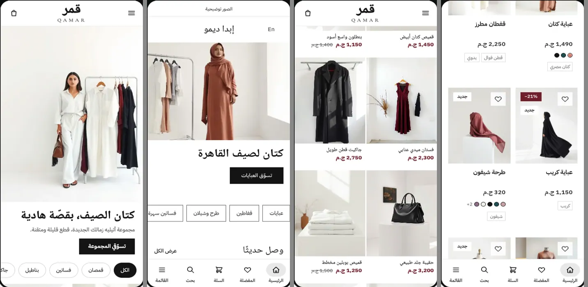
قمر · لوك بوك (Qamar · Lookbook)
Changes in the stack: 28/400 headings (Lalezar), bare cards, 22 px sections, lockup.
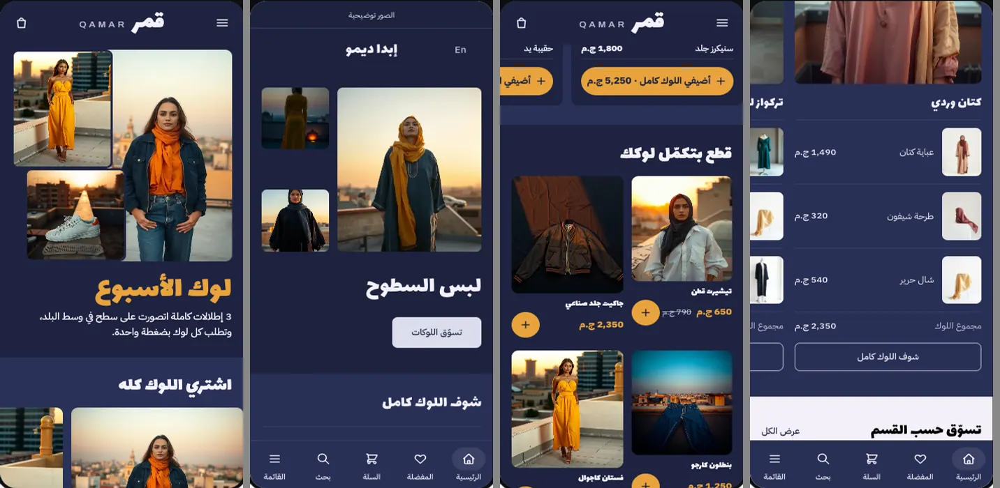
قمر · فاترينة (Qamar · Vitrine)
Changes in the stack: hero 4/4.6, 30/700 headings, bare cards, 72 px Ruqaa lockup.
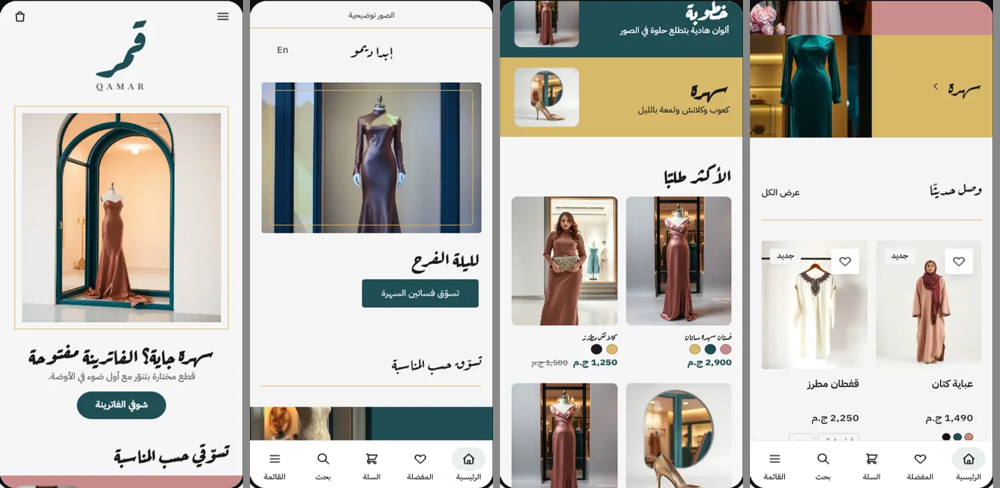
سوق · كتالوج (Souq · Catalogue)
Changes in the stack: 20/700 headings, bare cards, 14 px sections, slim tab bar.
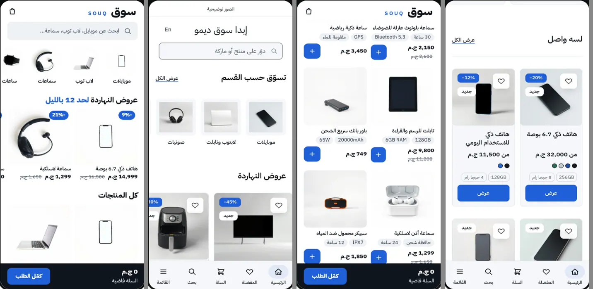
سوق · ليل (Souq · Night)
Changes in the stack: hero 1/1.05 with the mock hero photo, 26/700 headings.
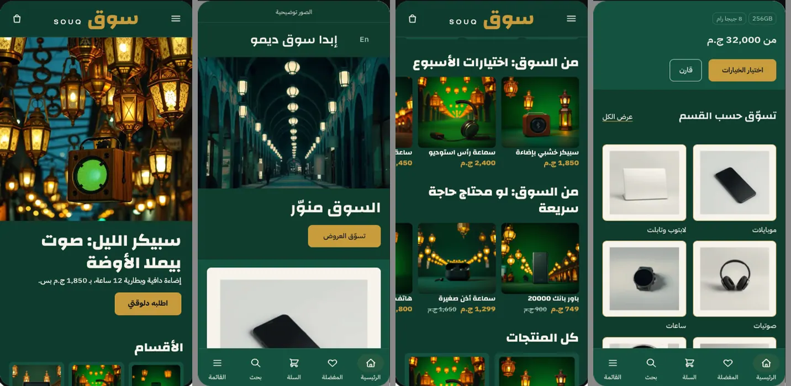
سوق · معرض (Souq · Showroom)
Changes in the stack: 30/700 headings, 28 px sections, bare cards.
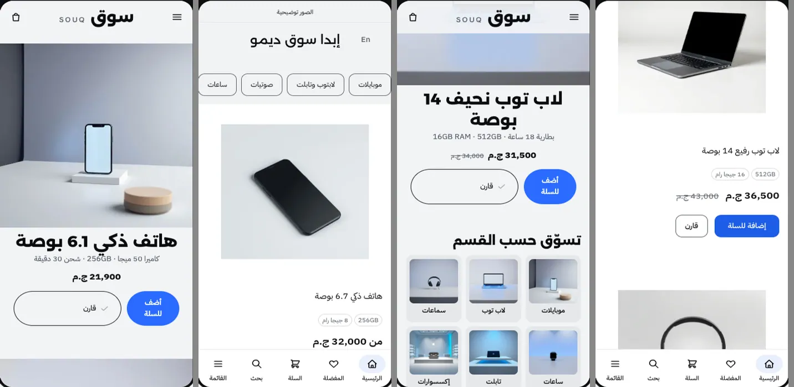
ياسمين · صيدلية (Jasmine · Apothecary)
Changes in the stack: 28/700 Amiri headings, mock hero photo, bare cards.
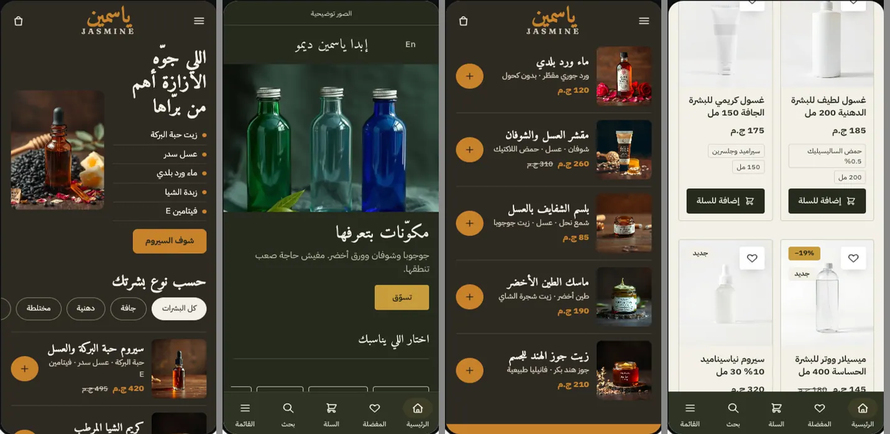
ياسمين · بلوم (Jasmine · Bloom)
Changes in the stack: hero 4/4.4 with the mock hero photo, 28/700 headings.
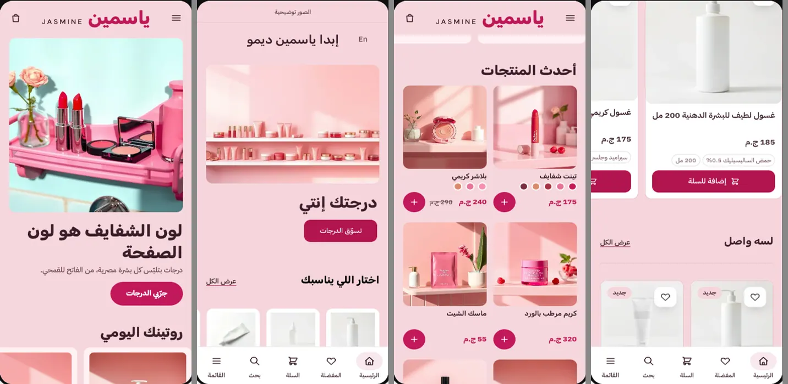
ياسمين · كلينيك (Jasmine · Clinic)
Changes in the stack: mock hero photo (its mix keeps the concern chips first), 25/700 headings.
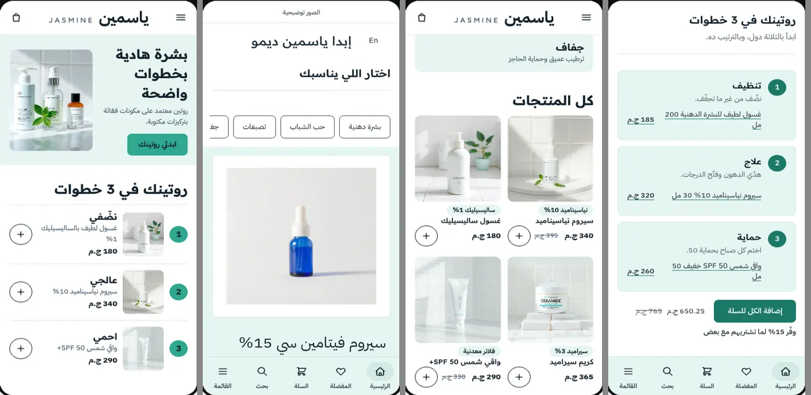
لمّة · سفرة (Lamma · Table)
Changes in the stack: hero 1/1 with the mock hero photo, herb accent #3E7A3A, 30/700.
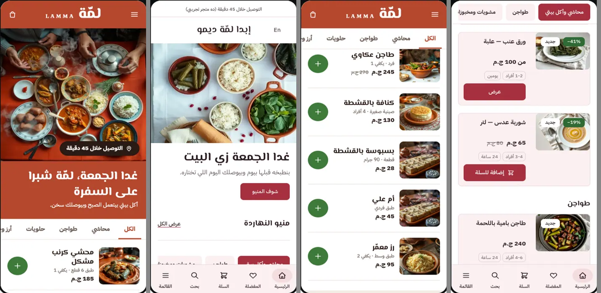
لمّة · كراسة (Lamma · Notebook)
Changes in the stack: 30/700 headings, 26 px sections.
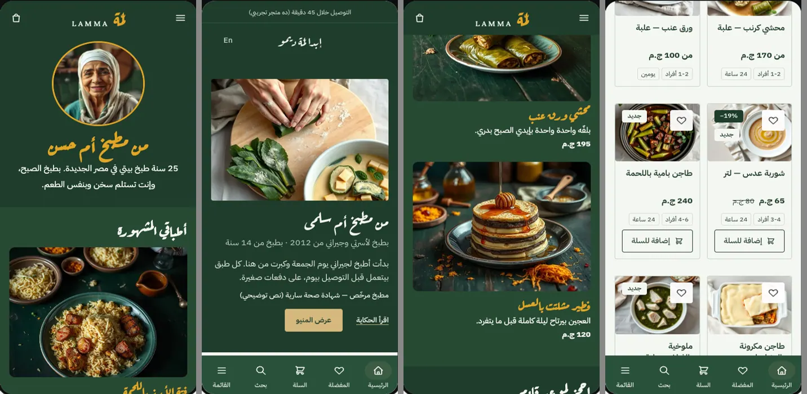
لمّة · سوق (Lamma · Market)
Changes in the stack: 22/700 headings, 14 px sections, bare cards.
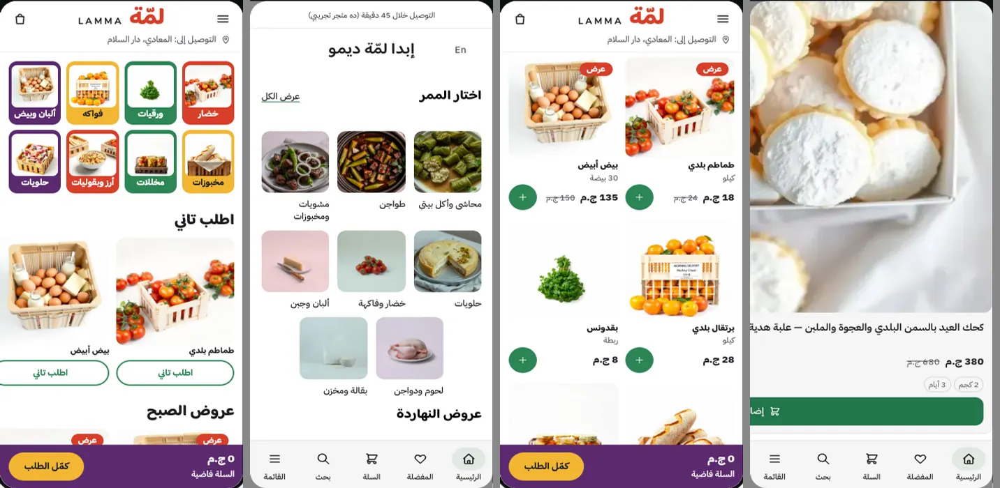
دهب · ورن (Dahab · Worn)
Changes in the stack: hero 4/5 with the mock hero photo, 28/600 headings, 24 px sections.
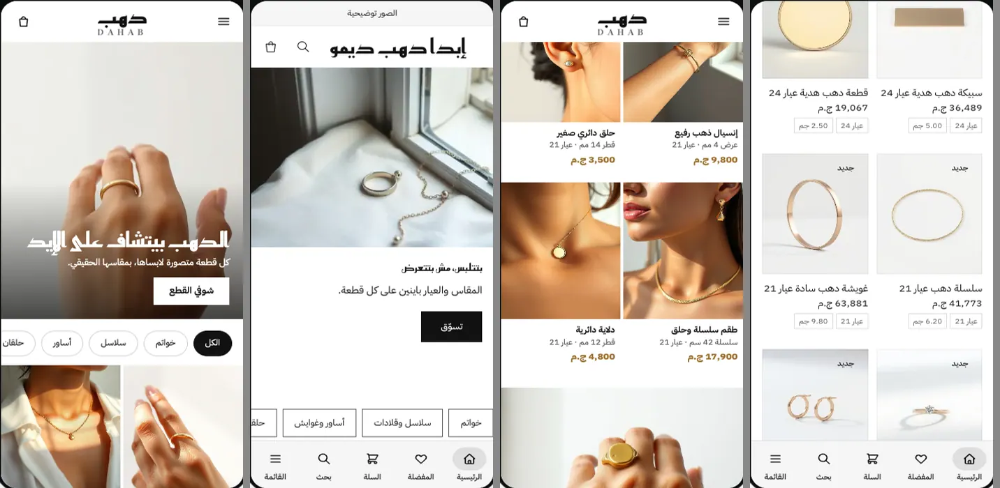
دهب · ورشة (Dahab · Workshop)
Changes in the stack: hero 4/3.4 with the mock hero photo, 34/600 headings.
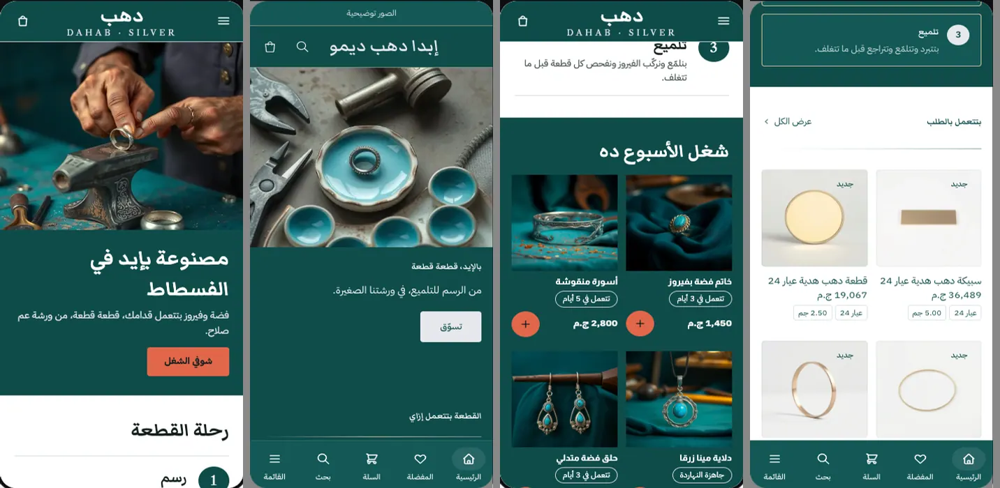
دهب · علبة هدايا (Dahab · Gift box)
Changes in the stack: hero 16/11 with the mock hero photo, 30/600 headings.
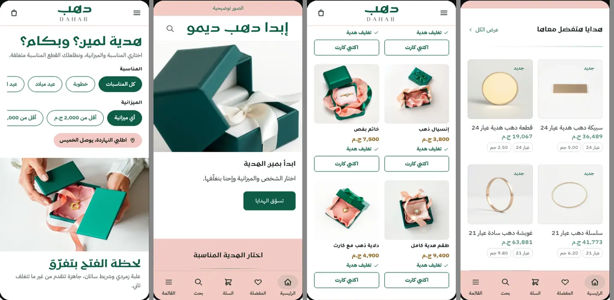